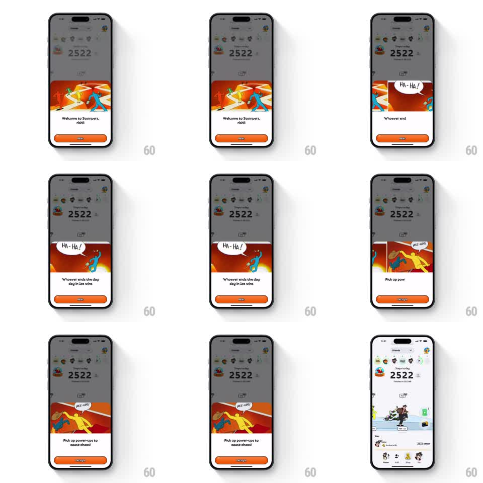

Media
Frame-by-frame

Rebuild this interaction 1:1: Stompers' onboarding bottom sheet slides up over the steps home screen, pages through three illustrated slides with speech-bubble characters, and slides down to reveal the app.

Rebuild this interaction 1:1: Stompers' onboarding bottom sheet slides up over the steps home screen, pages through three illustrated slides with speech-bubble characters, and slides down to reveal the app.
## Integration
Integration: stack-agnostic spec - springs given as stiffness/damping, timed motions as duration + curve; map every value to your framework and animation library of choice.
## Scene
Behind: the Stompers home screen (friends row, "Steps today 2522", tab bar). A white bottom sheet with rounded top corners rises to ~65% height, dimming the home screen. Inside: an illustration band (red-orange zigzag backdrop with stylized runners), a headline, and an orange full-width CTA. Slides: "Welcome to Stompers, rishi!" (NEXT), "Whoever ends the day in 1st wins" (NEXT, blue character with "HA-HA!" bubble), "Pick up power-ups to cause chaos!" (LET'S GO, two yellow characters with "HEE-HOO!" bubble).
## Motion spec
Pattern: bottom-sheet onboarding with horizontal carousel and slide-down dismissal.
- Sheet enters with a spring (~300/26) from off-screen bottom; backdrop dim fades to 40% (250ms).
- The illustration band is a horizontal carousel: tapping NEXT swipes to the next illustration (spring ~320/28, 20ms/px velocity carry) while the headline crossfades (200ms) and the CTA label swaps ("NEXT" -> "LET'S GO" on the last slide).
- Speech bubbles pop in after each illustration settles (scale 0.6 -> 1.1 -> 1, spring ~380/16, 120ms delay).
- LET'S GO slides the sheet back down (400ms, ease-in) and lifts the dim (300ms), revealing the home screen with its map card and leaderboard.
- The sheet is drag-to-dismiss: it tracks the finger 1:1, and releasing past 30% of its height dismisses with velocity.
## Calibration
- The sheet moves as one unit; illustration, text, and CTA never separate.
- Carousel paging and bubble pop are separate timelines: page first, pop second.
## Reduced motion
Sheet fades in/out (200ms); slides crossfade without horizontal travel.
## Don't miss
- The orange CTA is full-width with a heavy corner radius and stays pinned above the home indicator.
- Illustrations change per slide but keep the same red-orange zigzag backdrop.